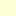
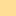
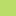
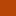

<!doctype html>
<html lang="en">
    <head>
        <meta charset="utf-8">
        <meta http-equiv="X-UA-Compatible" content="IE=edge">
        <meta name="viewport" content="initial-scale=1,user-scalable=no,maximum-scale=1,width=device-width">
        <meta name="mobile-web-app-capable" content="yes">
        <meta name="apple-mobile-web-app-capable" content="yes">
        <link rel="stylesheet" href="css/leaflet.css"><link rel="stylesheet" href="http://maxcdn.bootstrapcdn.com/font-awesome/4.6.1/css/font-awesome.min.css"><link rel="stylesheet" href="css/L.Control.Locate.min.css">
        <link rel="stylesheet" href="css/qgis2web.css">
        <link rel="stylesheet" href="css/Control.OSMGeocoder.css">
        <link rel="stylesheet" href="css/leaflet-measure.css">
        <style>
        html, body, #map {
            width: 100%;
            height: 100%;
            padding: 0;
            margin: 0;
        }
        </style>
        <title></title>
    </head>
    <body>
        <div id="map">
        </div>
        <script src="js/qgis2web_expressions.js"></script>
        <script src="js/leaflet.js"></script><script src="js/L.Control.Locate.min.js"></script>
        <script src="js/leaflet.rotatedMarker.js"></script>
        <script src="js/leaflet.pattern.js"></script>
        <script src="js/leaflet-hash.js"></script>
        <script src="js/Autolinker.min.js"></script>
        <script src="js/rbush.min.js"></script>
        <script src="js/labelgun.min.js"></script>
        <script src="js/labels.js"></script>
        <script src="js/Control.OSMGeocoder.js"></script>
        <script src="js/leaflet-measure.js"></script>
        <script src="data/CLASSI_USO_suolo_0.js"></script>
        <script>
        var map = L.map('map', {
            zoomControl:true, maxZoom:18, minZoom:10
        }).fitBounds([[43.4572237414,10.9736420877],[43.7614908018,11.4656497442]]);
        var hash = new L.Hash(map);
        map.attributionControl.addAttribution('<a href="https://github.com/tomchadwin/qgis2web" target="_blank">qgis2web</a>');
        L.control.locate().addTo(map);
        var measureControl = new L.Control.Measure({
            primaryLengthUnit: 'meters',
            secondaryLengthUnit: 'kilometers',
            primaryAreaUnit: 'sqmeters',
            secondaryAreaUnit: 'hectares'
        });
        measureControl.addTo(map);
        var bounds_group = new L.featureGroup([]);
        var basemap0 = L.tileLayer('http://{s}.tile.openstreetmap.org/{z}/{x}/{y}.png', {
            attribution: '&copy; <a href="http://openstreetmap.org">OpenStreetMap</a> contributors,<a href="http://creativecommons.org/licenses/by-sa/2.0/">CC-BY-SA</a>',
            maxZoom: 18
        });
        basemap0.addTo(map);
        function setBounds() {
            map.setMaxBounds(map.getBounds());
        }
        function pop_CLASSI_USO_suolo_0(feature, layer) {
            var popupContent = '<table>\
                    <tr>\
                        <td colspan="2">' + (feature.properties['v_16_07'] !== null ? Autolinker.link(String(feature.properties['v_16_07'])) : '') + '</td>\
                    </tr>\
                    <tr>\
                        <td colspan="2"><strong>names</strong><br />' + (feature.properties['names'] !== null ? Autolinker.link(String(feature.properties['names'])) : '') + '</td>\
                    </tr>\
                </table>';
            layer.bindPopup(popupContent, {maxHeight: 400});
        }

        function style_CLASSI_USO_suolo_0_0(feature) {
            switch(String(feature.properties['names'])) {
                case 'Arbusti_erbacee':
                    return {
                pane: 'pane_CLASSI_USO_suolo_0',
                stroke: false, 
                fill: true,
                fillOpacity: 1,
                fillColor: 'rgba(255,255,212,0.6)',
            }
                    break;
                case 'Boschi':
                    return {
                pane: 'pane_CLASSI_USO_suolo_0',
                stroke: false, 
                fill: true,
                fillOpacity: 1,
                fillColor: 'rgba(39,136,36,0.6)',
            }
                    break;
                case 'Frutteti':
                    return {
                pane: 'pane_CLASSI_USO_suolo_0',
                stroke: false, 
                fill: true,
                fillOpacity: 1,
                fillColor: 'rgba(255,222,150,0.6)',
            }
                    break;
                case 'Oliveti':
                    return {
                pane: 'pane_CLASSI_USO_suolo_0',
                stroke: false, 
                fill: true,
                fillOpacity: 1,
                fillColor: 'rgba(254,108,223,0.6)',
            }
                    break;
                case 'Prati':
                    return {
                pane: 'pane_CLASSI_USO_suolo_0',
                stroke: false, 
                fill: true,
                fillOpacity: 1,
                fillColor: 'rgba(0,218,109,0.6)',
            }
                    break;
                case 'Seminativi':
                    return {
                pane: 'pane_CLASSI_USO_suolo_0',
                stroke: false, 
                fill: true,
                fillOpacity: 1,
                fillColor: 'rgba(246,140,35,0.6)',
            }
                    break;
                case 'Vegetazione_rada':
                    return {
                pane: 'pane_CLASSI_USO_suolo_0',
                stroke: false, 
                fill: true,
                fillOpacity: 1,
                fillColor: 'rgba(186,221,105,0.6)',
            }
                    break;
                case 'Vigneti':
                    return {
                pane: 'pane_CLASSI_USO_suolo_0',
                stroke: false, 
                fill: true,
                fillOpacity: 1,
                fillColor: 'rgba(227,26,28,0.6)',
            }
                    break;
                case 'Zone_AGR_eterogenee':
                    return {
                pane: 'pane_CLASSI_USO_suolo_0',
                stroke: false, 
                fill: true,
                fillOpacity: 1,
                fillColor: 'rgba(182,71,8,0.6)',
            }
                    break;
            }
        }
        map.createPane('pane_CLASSI_USO_suolo_0');
        map.getPane('pane_CLASSI_USO_suolo_0').style.zIndex = 400;
        map.getPane('pane_CLASSI_USO_suolo_0').style['mix-blend-mode'] = 'normal';
        var layer_CLASSI_USO_suolo_0 = new L.geoJson(json_CLASSI_USO_suolo_0, {
            attribution: '<a href=""></a>',
            pane: 'pane_CLASSI_USO_suolo_0',
            onEachFeature: pop_CLASSI_USO_suolo_0,
            style: style_CLASSI_USO_suolo_0_0,
        });
        bounds_group.addLayer(layer_CLASSI_USO_suolo_0);
        map.addLayer(layer_CLASSI_USO_suolo_0);
        var osmGeocoder = new L.Control.OSMGeocoder({
            collapsed: false,
            position: 'topright',
            text: 'Search',
        });
        osmGeocoder.addTo(map);
        var baseMaps = {};
        L.control.layers(baseMaps,{'CLASSI_USO_suolo<br /><table><tr><td style="text-align: center;"></td><td>Arbusti_erbacee</td></tr><tr><td style="text-align: center;"></td><td>Boschi</td></tr><tr><td style="text-align: center;"></td><td>Frutteti</td></tr><tr><td style="text-align: center;"></td><td>Oliveti</td></tr><tr><td style="text-align: center;"></td><td>Prati</td></tr><tr><td style="text-align: center;"></td><td>Seminativi</td></tr><tr><td style="text-align: center;"></td><td>Vegetazione_rada</td></tr><tr><td style="text-align: center;"></td><td>Vigneti</td></tr><tr><td style="text-align: center;"></td><td>Zone_AGR_eterogenee</td></tr></table>': layer_CLASSI_USO_suolo_0,},{collapsed:false}).addTo(map);
        setBounds();
        </script>
    </body>
</html>
